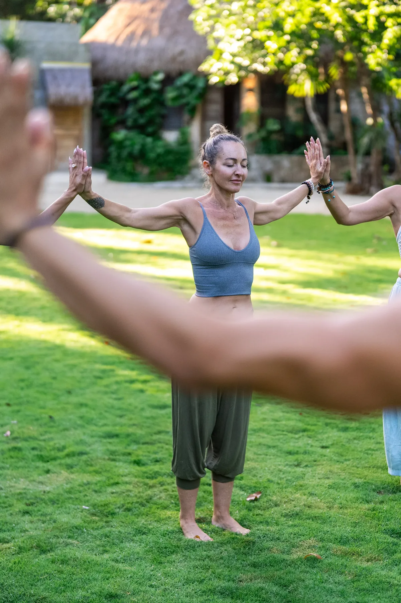

FAQ
The questions we're asked most. If yours isn't here, write to us — every message is read personally.
Everything begins with the health screening. Once we've read it, we'll arrange a call to answer your questions and see whether this is your time. If you're cleared, we process payment and send you everything you need — dates, preparation, and your retreat information.
Yes — everyone does, for every offering. Certain conditions and medications aren't safe to combine with these medicines, so we need the full picture before we can hold you well. Please tell us everything, including anything you're unsure about.
Private ceremonies and private medicine retreats are held in Tulum, Mexico. The Bufo Practitioner Training takes place at the Lunita Jungle Retreat in Puerto Morelos, Mexico. The Liberation Program runs online, with one week together in person.
Bufo (5-MeO-DMT), Kambo, Psilocybin, and Rapéh are offered as private ceremonies. Retreats may also weave in San Pedro, alongside yoga, meditation, breathwork, sound healing, and ice therapy. Every journey is shaped around you — you choose what resonates.
Yes. Private retreats are available for singles, couples, or friends sharing the journey, and accommodations are arranged to suit. Couples pricing is listed above.
It's a 13-day immersion, running March 6–18, 2027, at the Lunita Jungle Retreat in Puerto Morelos. It's a certified training in the safe and reverent facilitation of Bufo / 5-MeO-DMT, capped small so attention stays individual.
Nine weeks — four weeks of preparation, one week together in person for the retreat, then four weeks of integration. Dates are announced as cohorts open.
Round-trip private shuttle, meals prepared with intention, all ceremonies and sessions, daily yoga, sound healing and meditation, a private room with access to the rooftop pool, yoga shala and gym, plus holistic therapies and one additional modality of your choice.
There are no automated replies here. Every message and every screening is read personally, so give us a little time — we'll come back to you.
Still wondering about something?
Contact Us